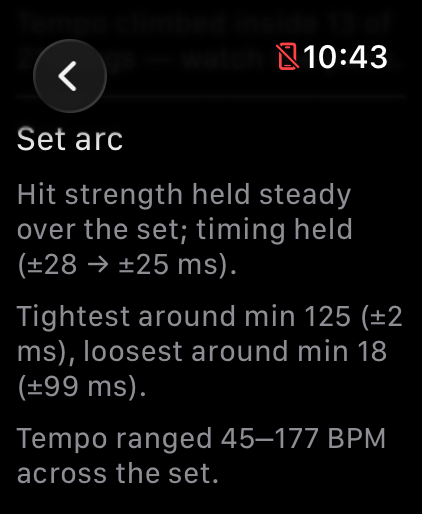
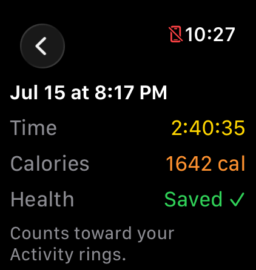

Getting started
Here's what your first session looks like, start to finish. You don't need to set anything up. Put the watch on and play.
Either hand works. DrumPulse reads the force of each strike, so hits register the same on your left or right wrist. The watch can only see the hand it's on, though, and that's the hand it grades. Most drummers wear it on their snare hand to grade backbeats.
Open DrumPulse on the watch and choose how you want to be graded:
For your first session, go with Free Play. There's nothing to set, and the feedback starts as soon as you play.
Then tap Start. If you already have sticks in your hands, double-tap your fingers to start hands-free (Series 9 and Ultra 2).

Kit, electronic kit, practice pad, even a pillow or your knee. DrumPulse senses motion, not sound, so any surface works. If you want a moment to settle in, turn on the count-in and four beats play before grading starts.
While you play, the watch shows the groove meter swinging between rushing and dragging, plus your tempo, heart rate, calories, and hit count.


Stop the session and the recap shows your groove score (0–100), how much you rushed or dragged, your dynamics split into ghost, body, and accent, and the arc of the whole set. In Free Play you also get a per-song breakdown, each song with its own tempo and timing.


You don't have to do anything for this step. Heart rate, calories, and recovery save to Apple Health automatically, and the session counts toward your activity rings. Drumming is cardio, and now it shows up that way.

Your set shows up in the iPhone app on its own; there's nothing to export. The bigger screen has the full detail: timing, songs, effort, and trends across sessions. When you're ready to go deeper, the Help & Guide lives at the bottom of the Sessions list.

Tip: if hits seem missed or double-counted, run Calibration in the watch settings. You tap the pad eight times and DrumPulse sets its sensitivity from your real strikes.